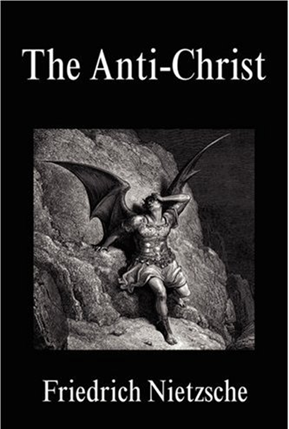
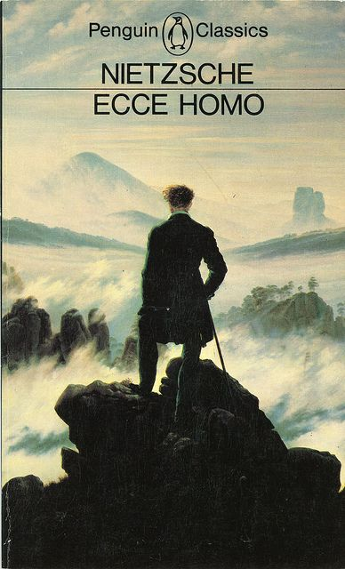
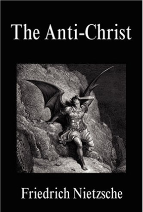
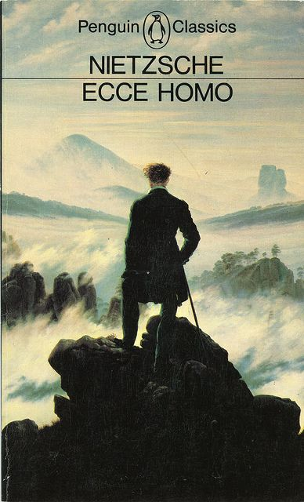

Friedrich Wilhelm Nietzsche (15 October 1844 - 25 August 1900) was a German philosopher,culturalcritic and philologist whose work has exerted a profound influence on modern intellectual history. He began his career as a
classical philologist before turning to philosophy. He became the youngest person ever to hold the Chair of Classical Philology at the University of Basel in 1869 at the age of 24.
Nietzsche resigned in 1879 due to health problems that plagued him most of his life; he completed much of his core writing in the following decade. In 1889, at age 45, he suffered a collapse and afterward a complete loss of his mental faculties,
with paralysis and probably vascular dementia.
He lived his remaining years in the care of his mother until her death in 1897 and then with his sister Elisabeth Förster-Nietzsche. Nietzsche died in 1900, after many strokes and pneumonia.
Friedrich Nietzsche is one of the most influential modern thinkers, best known for his writings on religion, good and evil, and the concepts of the super-man
and will to power
.
Nietzsche was the youngest ever to hold the Chair of Classical Philology at the University of Basel. When he received the offer, he was only 24 and didn't own a teaching certificate nor had completed his doctorate. Unfortunately, after
10 years of teaching, Nietzsche had to resign, as he suffered from a nervous disorder and his health has slowly deteriorated. The following decade was one of isolation and creation. In serious pain and half-blind, Nietzsche wrote his masterpiece
in biblical-narrative form — Thus Spoke Zarathustra and other books that influenced generations of philosophers, novelists and psychologists.
Nietzsche sparked controversy but also admiration for his famous statement
that God is dead
. He also introduced us to concepts related to an individual's achievements, ambition, and the striving to exist beyond conventional categories as good and evil.

 



"Whoever fights monsters should see to it that in the process he does not become a monster. And if you gaze long enough into an abyss, the abyss will gaze back into you."
"The tree that would grow to heaven must send its roots to hell."
"You have your way. I have my way. As for the right way, the correct way, and the only way, it does not exist."
"I was in darkness, but I took three steps and found myself in paradise. The first step was a good thought, the second, a good word; and the third, a good deed."
"There will always be rocks in the road ahead of us. They will be stumbling blocks or stepping stones; it all depends on how you use them."